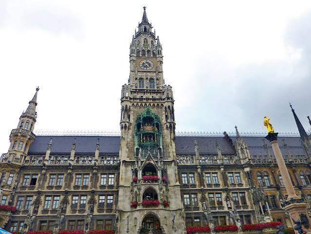

Issue 08 · 2026🇩🇪 GERMANY
Munasinghe-Fernando Travel Magazine
GERMANY
Munich · Ottobeuren · and back again
★ Where Europe Began
🍺 Beer Halls & Onion Domes
⛪ A Baroque Abbey
INSIDE: our first hours in Europe at Munich's Marienplatz · the Glockenspiel and the onion domes · Bavaria's beer halls and a 20th-century reckoning · the Benedictine abbey at Ottobeuren
Munasinghe-Fernando Family · 11 Jul · 27 Jul · 5 Aug 2026
No. 08 · A Letter from the Road
Who we are,
why we travel.
We're the Munasinghe-Fernandos — two parents and three children who love to see the world together. My husband and I share one dream: to travel to as many countries as we possibly can, as a family.
It's never easy — booking flights, trains and rooms for five is its own small adventure, and we know we can't reach everywhere. But from every country we do get to, we try our very best to see as much as we can. This magazine is where we keep all of it.
— The Munasinghe-Fernandos, 2026
No. 08 · Welcome
Welcome to
Bavaria
Germany, for us, was less a destination than a doorway. We passed through it three times, and each time it was Bavaria — the Catholic, Baroque, beer-loving south, proud of its blue-and-white flag and slightly amused by the rest of the country. It was the first European ground we ever stood on, and, four weeks later, the last.
The first pass was our arrival: a dawn flight from Beijing, a jet-lagged morning in Munich, and our very first European square. The second was a single night at Ottobeuren, a tiny Allgäu village with a Benedictine abbey far too grand for its size, where we broke the long drive south toward Lourdes. The third was the way home — back to Munich Airport, one last European sleep, and the long flight east.
Munich is Bavaria's capital and its welcome: a city the monks founded in 1158, the seat of the Wittelsbachs for seven hundred years, and the gateway to the Alps. It gave the world the beer hall and Oktoberfest — and, in a darker century, a reckoning it has never looked away from. This is a short issue, because we only ever passed through. But a doorway is still where every journey begins.
In this issue
- A Letter from the Road02
- Welcome to Bavaria03
- The Journey So Far04
- Munich — First Hours in Europe05
- Munich — The City on Foot06
- Marienplatz — The Living Statues07
- Marienplatz — Old & New08
- The Glockenspiel & the Onion Domes09
- Beer Halls & a Reckoning10
- Ottobeuren — the Abbey in the Allgäu11
- Full Circle — Munich, and Home12
- Tastes of Bavaria13
- Reflections + What's Next14
The Journey · Chapter Eight
The doorway to
the whole of Europe.
The story so far: from Beijing we flew west overnight and came down at Munich at first light — our very first morning on European soil. From there the road ran on through Austria and Czechia, Hungary and Italy, and up into the Swiss Alps, the family growing surer of itself with every border.
Germany is Chapter Eight in this series, but on the map it sits at both ends of the journey — the country where Europe opened for us in July, and the country we would fly home from in August. This page rides at the front of every issue: where we've been, where we are, and where we're headed next.
The Route · 14 Countries + Home · 25 Nights in Europe
01China ✓
02Austria ✓
03Czechia ✓
04Hungary ✓
05Slovenia ✓
06Italy ✓
07Switzerland ✓
08Germany ★
09France
10Netherlands
11Belgium
12Denmark
13Sweden
14Vatican
⌂Home
Germany — where Europe began for us: a first European square, a Bavarian abbey, and the road home.
— Issue 08 · GERMANY · The Journey —
VISIT 1 OF 3 · MUNICH · ARRIVAL IN EUROPE
First hours in Europe.
The city the monks built
Munich takes its name from the monks who settled the riverbank here — Munichen, "by the monks" — when Duke Henry the Lion granted the little market its charter in 1158. For the next seven hundred years the Wittelsbach dynasty ruled Bavaria from this spot, leaving a capital of Baroque palaces, opera houses and the vast Englischer Garten, with the Alps rising just beyond the southern skyline. In 1810 a royal wedding here grew into Oktoberfest, now the largest folk festival on earth.
It made a fitting front door to a continent — grand, orderly, and easy to like. But for us, arrival looked less like a palace and more like a torn suitcase on a luggage belt. Europe, as it turned out, began the way travel always really does: with a small problem to solve.
We landed in Munich straight from Beijing — jet-lagged, a little boy freshly recovered, and one of our big backpacks split open on the carousel.
Sat 11 Jul 2026Munich Airport → Munich cityVisit 1 of 3
Our overnight flight from Beijing touched down at Munich a little after seven, and Europe let us in without fuss — a stamp at immigration, and down to the carousel. The best news was waiting there: Avin, feverish and fragile at the last airport, was fully himself again. The worst news was waiting there too — one of our big backpacks, the family's main luggage, had been torn open somewhere in the belly of the plane. Our very first European task, before we had even left the terminal, was to work out where to buy a replacement.
Then the stroller vanished. We waited by the belt long after the last case had circled, until someone kindly explained that Munich keeps oversized items like strollers at a separate collection point, not at the carousel at all. Lesson filed. What the airport does have is a small miracle for a family off a red-eye: public shower cubicles. Twenty-five euros bought one cubicle for two hours, and in about forty-five minutes all five of us had washed the flight away and felt human again.
Europe began the way travel really does — a recovered little boy, a torn bag, and a shower that cost twenty-five euros.
Then the car — collected smoothly at the airport rental centre — and the moment we clicked them in, the children fell in love with their own seats. There was just one adjustment to make: in New Zealand we drive on the left, and here everything is mirrored — the wheel, the lanes, the roundabouts all on the opposite side. The first few minutes were nervy. But the body learns fast, and within half an hour the right-hand road felt almost ordinary. We drove into the city with a whole day of Europe ahead of us.
Photo · Munasinghe-Fernando
Human again: outside shower cubicles five and six at Munich Airport, where twenty-five euros and about forty-five minutes washed off the overnight flight from Beijing — our very first task on European soil, before we'd even left the terminal.
— Issue 08 · GERMANY · Arrival in Europe —
VISIT 1 OF 3 · MUNICH · THE CITY ON FOOT
A supermarket picnic,
and a golden square.
Our first European lunch came off the shelf at a REWE — salads, hot dogs and a Brezel, eaten in the sun — before Marienplatz, the old parish church, and two performers who stood impossibly still.
Sat 11 Jul 2026REWE → Marienplatz → PeterskircheOn foot, then on to Austria
Photo · Munasinghe-Fernando
Photo · Munasinghe-Fernando
Left — our very first European lunch, straight from a supermarket shelf and eaten on a sunny street: salads, hot dogs and a Brezel. Right — all five of us at Marienplatz, the New Town Hall's soaring tower and the golden Madonna of the Mariensäule behind us: our first proper European square.
We began, as it turned out, in front of a supermarket. Parked up outside a REWE, we did the most sensible thing a jet-lagged family can do: we bought lunch off the shelf — a few salads, some hot dogs, and a Brezel, that great salt-crusted Bavarian pretzel — and ate it in the sunshine. It was cheap, it was fresh, and after a red-eye and a torn backpack it felt like a small feast. Our first European meal, and it came in a plastic supermarket bag.
Fed and revived, we set off on foot into the city, which led us to Marienplatz — the central square, ringed by the great neo-Gothic New Town Hall and watched over since 1638 by the golden Madonna on her column. Just off it stands the Peterskirche, "Alter Peter," the oldest parish church in Munich. What struck us most, standing in the middle of it, was how the square seemed to hold two ages at once — grand old stone and Gothic spires on one side, bright modern shopfronts and the hum of a working city on the other, the historic and the contemporary side by side. After Beijing's scale and rush, Munich felt like a held breath: old and new together, and entirely charming.
Our first European meal came in a supermarket bag — and it felt like a feast.
The children's favourite, though, were the two street performers near the square. One was painted head to toe in black and gold, the other in the colours of sand and mud, and both stood so utterly, impossibly still that they looked like statues — until, every so often, one would shift a fraction and make the watching kids jump and laugh. Avisha, Aviann and Avin could have watched them all day. But Austria was three hours' drive away and a castle was waiting, so by mid-afternoon we were back in the mirrored car, pointing south — Europe properly, wonderfully begun.
— Issue 08 · GERMANY · Munich on foot —
VISIT 1 OF 3 · MUNICH · MARIENPLATZ IN PICTURES
The statues that
wouldn't blink.
The children's favourite corner of Europe so far: two street performers who held so impossibly still the kids kept creeping back to check they were real — and a golden square we couldn't stop photographing.
Photo · Munasinghe-Fernando
The gold man on his plinth — bronze from head to boots, shifting only a fraction at a time to make the watching children jump and laugh.
Photo · Munasinghe-Fernando
His partner in sand and mud, folded on the ground inside a ring of stones — the square's other silent statue.
Photo · Munasinghe-Fernando
The children at the foot of the Mariensäule — one of them documenting Europe with a camera of their own.
Photo · Munasinghe-Fernando
All five of us beneath the golden Madonna's column and the New Town Hall's soaring tower.
Photo · Munasinghe-Fernando
One more for the album — the great neo-Gothic facade of the Rathaus at our backs.
— Issue 08 · GERMANY · Marienplatz —
VISIT 1 OF 3 · MUNICH · MARIENPLATZ IN PICTURES
Old and new,
side by side.
What stayed with us about Marienplatz was how it held two ages at once — Gothic stone and Baroque gold on one side, a humming modern shopping street on the other. A last look around before the road turned south to Austria.
Photo · Munasinghe-Fernando
The New Town Hall up close — pinnacles and statues, and the pink festival banners flying the day we came.
Photo · Munasinghe-Fernando
Inside one of the old town's Baroque churches, just off the square — a soaring nave of gilded altars, standing apostles and a frescoed ceiling.
Photo · Munasinghe-Fernando
Kaufingerstraße, the pedestrian shopping street running off Marienplatz — the modern city humming right beside the old.
Photo · Munasinghe-Fernando
Market tents and flags across the square — a working city going about its ordinary day.
Photo · Munasinghe-Fernando
One of the old town's churches a few steps off the square, its Gothic flank rising straight from the lane.
Photo · Munasinghe-Fernando
Off into the old town on foot — the children leading the way through Munich's quiet back lanes.
— Issue 08 · GERMANY · Marienplatz —
MUNICH · MARIENPLATZ · A LITTLE HISTORY
The bells that stop
a whole square.
Twice a day the New Town Hall's tower comes alive — forty-three bells and thirty-two figures acting out a story four hundred years old, while below, the crowd tilts its heads back as one.
Marienplatz, MunichThe Glockenspiel & the FrauenkircheThen & now

Photo · Munasinghe-Fernando
The New Town Hall (Neues Rathaus), built between 1867 and 1908 in the neo-Gothic style — and set into its tower, the Glockenspiel that draws a crowd to Marienplatz on the stroke of the hour.
The tower everyone gathers beneath was finished in 1908, and with it came the Glockenspiel: forty-three bells and thirty-two near-life-sized figures who wheel out to perform at 11am (and, in summer, at noon and again at 5pm). The upper story re-enacts the 1568 marriage of Duke Wilhelm V, jousting knights and all; the lower one dances the Schäfflertanz, the coopers' dance said to have first cheered the city after a 16th-century plague.
A few streets away rise the landmarks you can see from almost anywhere in Munich: the twin brick towers of the Frauenkirche, the Cathedral of Our Lady. The church itself was completed in 1488, but the money ran short before the planned Gothic spires could be built. When the towers were finally capped in 1525, it was with rounded copper "Welsche Hauben" — onion domes, their shape borrowed from far to the east.
The onion domes of the Frauenkirche were copied so widely they became the signature of Bavaria itself.
Those domes proved so popular that churches across Bavaria copied them for centuries afterward — which is why, all the way south to the Alps, so many village steeples wear the same gentle onion crown. We only glimpsed them between the rooftops as we walked, but you carry the shape with you long after: the quiet emblem of the Catholic, Baroque south we had just driven into.
And there they are for real — the Frauenkirche's onion-domed towers rising behind us, a few streets from Marienplatz on our first afternoon in Europe. The shape we would go on to see on village steeples all the way to the Alps.
Photo · Munasinghe-Fernando
— Issue 08 · GERMANY · The Glockenspiel —
MUNICH · THE 20TH CENTURY · A LITTLE HISTORY
Beer halls,
and a reckoning.
You cannot tell Munich's story only through palaces and pretzels. The same warm, boisterous beer halls that make the city famous were also, for a terrible decade, the cradle of the darkest movement of the century — and Munich has chosen to remember, not to hide.
Munich1589 · 1923 · todayContext
Bavaria runs on beer, and it runs on it formally. The most famous of the halls, the Hofbräuhaus, opened in 1589 as the royal ducal brewery of Wilhelm V; today its vaulted rooms seat thousands under an oompah band, pretzels come the size of dinner plates, and the pale Helles lager is poured by the litre. The beer hall — long shared tables, strangers elbow to elbow — is one of the friendliest institutions in Europe.
Which is exactly what makes the other half of the story so sobering. In the 1920s those same halls, thick with grievance after a lost war, became the meeting rooms of the infant Nazi party. In November 1923 an attempted putsch began in a Munich beer cellar; a decade later the regime it spawned styled the city the "Capital of the Movement." Much of the old centre we walked was rebuilt from the rubble of the bombing that followed.
Munich rebuilt its beautiful old face from the rubble — and refused to rebuild the silence around what happened here.
What we found admirable is what Munich does with that memory. Rather than quietly move on, the city has confronted its past head-on: plaques mark where the resistance was arrested, the White Rose students are honoured at the university, and a stark modern Documentation Centre stands, deliberately, on the very ground where the party once had its headquarters. It is a hard thing to explain to children on a sunny first day — that a place this welcoming once went so wrong. But it felt important that the same city teaching them about beer gardens was also, honestly, teaching the world how to remember.
— Issue 08 · GERMANY · A Reckoning —
VISIT 2 OF 3 · OTTOBEUREN · ON THE ROAD SOUTH
A village, an abbey,
and a night in Bavaria.
A thousand years above a village of eight thousand
Ottobeuren is a small market town in the Allgäu, an hour south of Munich, with a main street, a brewery, and a Benedictine abbey utterly out of proportion to its size. The monastery was founded here in 764 AD; its present church — the Basilica of Saints Alexander and Theodore — was begun in 1737 and consecrated in 1766, its ceilings frescoed by Johann Jakob Zeiller and its plasterwork shaped by Johann Michael Feichtmayr, among the finest Baroque artists of the age.
It is often counted among the great Baroque abbey churches of southern Germany. On 25 January 1926, Pope Pius XI raised it to the rank of minor basilica. And it stood just a few streets from the little hotel where we spent the night.
Between the Swiss Alps and the pilgrimage road to Lourdes, we broke the long drive south with a single Bavarian night — and our first proper Bavarian dinner.
Mon 27 Jul 2026Moléson → Bern → Ottobeuren~480 km · one night
We came to Ottobeuren the long way. That morning we had left Moléson in the Swiss mountains, paused three hours in Bern to see its arcaded old town and its bears, and then driven on across the border into Bavaria as the afternoon wore away — some four hundred and eighty kilometres in all, the Alps slowly flattening into the green Allgäu.
Our bed for the night was the Hotel Hirsch, on Ottobeuren's Marktplatz, a few minutes' walk from the great abbey. After weeks of picnic lunches and self-catered suppers, we treated ourselves here to a proper Bavarian dinner in a warm, timber-panelled room — the kind of hearty, unfussy food this corner of Germany does so well, and a gentle end to a very long day on the road.
One small Bavarian village, one enormous Baroque abbey, and a hearty dinner to end a day that had begun in the Alps.
It was the briefest of stops — a place to sleep between two countries rather than a destination in itself. We were up early the next morning for the drive to Munich Airport, where the German rental car went back and a flight was waiting to carry us west toward Lourdes. But even a single night in a village like this leaves its mark: proof that in Bavaria, the extraordinary hides in the smallest of places.
— Issue 08 · GERMANY · Ottobeuren —
VISIT 3 OF 3 · MUNICH · FULL CIRCLE
Where Europe began,
and where it ends.
Four weeks and thirteen countries after our first jet-lagged morning at Marienplatz, the road brought us back to exactly where it started — into Munich Airport at dusk, one last European sleep, and a small, clever trick with a luggage locker.
Wed 5 – Thu 6 Aug 2026Gothenburg → Munich → Beijing → homeThe way home
Mercure · Aufkirchen · reference
Our last European bed — a small Mercure at Aufkirchen, a village a short hop from Munich Airport, where we spent the final night before the flight home.
There is a neatness to how this journey closes. After the palaces and the canals, the Alps and the pilgrimage, the last of our European family — a sister in Gothenburg — waved us off, and we flew south one final time to Munich. Of all the cities in Europe, it was the one where we had begun: the same airport where, four weeks earlier, a torn backpack and a twenty-five-euro shower had welcomed us to the continent. Our flight came down at about half past eight in the evening, the terminal glowing against the dusk.
This time there was no city to walk and no square to find — only the small task of getting five tired travellers to bed and back to the gate. So we played it clever. Rather than haul every last bag out to the hotel and drag it all back again, we stowed the bulk of our luggage in a locker at the airport and carried off only what we truly needed for the night — pyjamas and the next day's clothes. Travelling light, the hop out to our beds and back could be done with ease.
We locked the heavy bags away at the airport and carried out only pyjamas and tomorrow's clothes — so the very last hop could be done light.
A short ride took us to a little Mercure at Aufkirchen, a village near the airport, for our final European sleep. The next morning we caught the bus straight back to the terminal, gathered up the bags we had left waiting in the locker, and checked in at Terminal 2 around half past ten. Then the long China Air flight to Beijing — with the Great Wall waiting for one last stopover before the final hop home to Auckland. Germany had been the very first place we set foot in Europe, and now it was the last we would leave: the doorway in, and the doorway home.
— Issue 08 · GERMANY · Full Circle —
★ TASTES OF BAVARIA
Four things we found
on Bavarian plates.
Hearty, honest, southern-German food — from the pretzel that was our very first European lunch to the sausages Bavaria won't let you eat after noon.
01
Brezn & Laugengebäck
The lye-bread family — soft, dark-crusted and scattered with coarse salt. A knotted Brezel from a Munich supermarket was, quite literally, the first thing we ate in Europe.
📍 Bavaria · every bakery, every day
02
Weisswurst
Pale veal-and-pork sausages, gently simmered and served with sweet mustard and a pretzel. Tradition is strict: they must be eaten before the noon bell.
📍 Munich · a morning ritual
03
Leberkäse
Bavaria's "liver cheese" — which contains neither — a smooth baked meatloaf, sliced thick and tucked warm into a crusty Semmel roll. Everyday food, done properly.
📍 Bavaria · the classic snack stop
04
Maultaschen
Large filled pasta pockets from neighbouring Swabia — nicknamed "little cheats" because monks once hid the meat inside for Lent. Served in broth or pan-fried with onions.
📍 Swabia & the Allgäu · comfort on a plate
— Issue 08 · GERMANY · Tastes of Bavaria —
REFLECTIONS · GERMANY
A first square,
a Baroque abbey,
and the road home.
Germany never got more than a few days from us, all told — a morning on the way in, a night on the way south, and a last sleep on the way home. But it did something none of the other countries could: it stood at both ends of the whole journey, the first European ground under our feet and the last we left behind.
What we will carry home is the ordinary magic of that first afternoon — a supermarket pretzel eaten in the sun, three children laughing at a living statue, and the golden square at Marienplatz opening a whole continent in front of us.
Favourite moment
Standing at Marienplatz on our very first European afternoon — jet-lagged, freshly showered, and suddenly, thrillingly, in Europe at last.
Hardest moment
A backpack torn open on the very first carousel — and learning to drive on the right, everything mirrored, within the first nervy half-hour.
If we come back…
Time to actually stop: inside the Ottobeuren basilica, up to Neuschwanstein and the Alps, and on to Berlin, Dresden and the Romantic Road.
Some countries you visit; others you simply pass through. Germany we mostly passed through — and still it framed everything, the doorway we stepped through into Europe and the doorway we stepped back out of on our way home. One day we will give Bavaria the time it deserves. Until then, it will always be where our great journey began.
— Avinesh, Lana, Avisha, Aviann & Avin Munasinghe-Fernando
Munich → Ottobeuren → Munich · 11 Jul – 6 Aug 2026
Munasinghe-Fernando Travel Magazine
No. 08 · One of Fourteen
★ NEXT ISSUE ★
FRANCE
Lourdes' candlelight procession, Paris' Eiffel Tower at midnight, and a TGV ride between them.